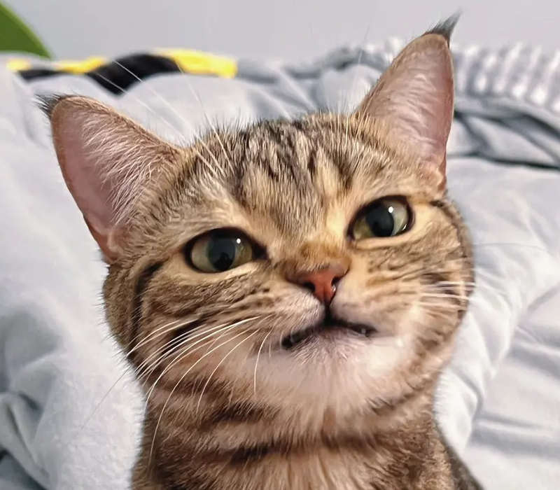

博客blog
首页
留言板
关于网站
制作目的
制作过程
日后用途
特别鸣谢
搜索
搜站内
搜站外

关于网站
在这里记录了这个网站的全部
欢迎来探索
制作目的
制作过程
日后用途
特别鸣谢
Part1 制作目的
网站的建站目的有三
第一是为了完成期末作业
第二是为了记录一下我的乱七八糟
第三是增加一下自己的编程经验也使自己和同学更加有兴趣学习编程
Part2 制作过程
step1:老师领进门
step2:大量的看视频学习基础,逛网站学习布局
step3:最终自己动手制作完成了这样一个个人博客
Part3 日后用途
这个网站建立的初衷就是一个个人博客
为了记录一下我的乱七八糟
在今后我也会继续完善它
同时我的一些笔记和生活也会记录在此
Part4 特别鸣谢
老师
侯建峰
哔哩哔哩
up：黑马前端（pink老师）
up：山羊の前端小窝
up：断了木马牛的李淳罡
up：AEI至死不渝
up：鹅厂程序员
up：仵航
up：CrazyYu
up：卢一weirry
up：叫我凤凰Blanco
up：康文昌
up：前端老师
up：Kepler-9b
up：bulv_
up：程序白
up：Janey的极简分享
up：有鱼是只猫
up：编程界天花板
up：总监日记
up：艾恩小灰灰
up：sanyuan_三元
gethub
ylishu
Chien-W
ViolentAyang
感谢马群的制作
回到顶部